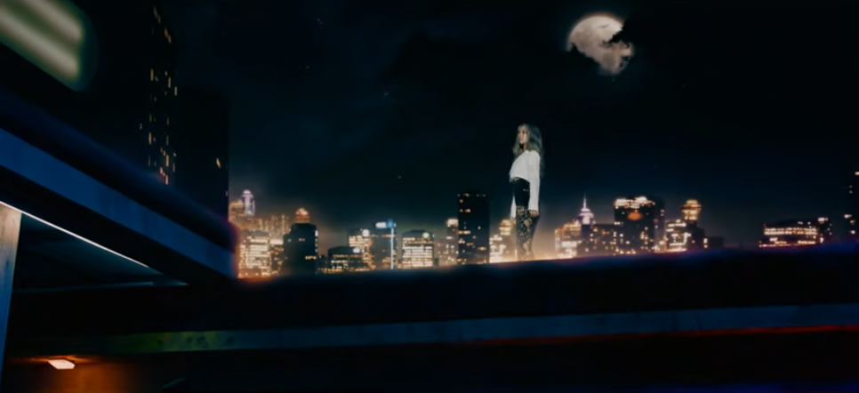

Yooh Encircled, Part 1: Villain & Victim
I have a soft spot for DC’s lead vocalist Yoohyeon. I think she’s at best misunderstood and at worst stereotyped by some insomnia. I think there are reasons for that even though I don’t like how she’s often portrayed.
In fact, Yoohyeon’s very strengths and vulnerabilities are why only she is chosen to play the roles she does in DC MVs and other performances.
It’s unfortunate that these roles she plays feed some of the discourse about her.
But that is more of a problem of fan interpretation and bad discourse than of the situation DCC puts Yoohyeon in. She is crucial to the stories they’ve been telling. And that’s what Part I will focus on.
But first, we need to talk about circles.
Circles show up quite a bit in DC’s music videos. They’re a potent, flexible symbol. Circles can come in the form of lenses, portals, moons, eyes, targets, mirrors, crowns, clock faces, collars, rings. They can also be spheres or tubes.
Because they have no beginning or end, circles take on many meanings–being bound in a positive way (a wedding ring) or a negative way (a collar). They often used to represent eternity and thus either recurrence, progress, or stasis.
Very often in DC’s MV’s circles are associated with Yoohyeon. And they are associated with the two major roles she tends to play in DC MV’s (and sometimes on vlives and variety shows): the victim and the villain.
When we first see Yooh in the Chase Me MV, she’s literally confined in a circle of her members. The rest of the video also features other circle motifs.
Yoohyeon is also the first member we see in the Good Night video (although it flashes by quickly). She’s portrayed as being confined in a circular mirror.
Granted, so are the other members. But things change, whenYooh’s role becomes more distinct in the Fly High MV where we learn she has instigated the nightmare they’re trapped in by killing a spider with a magnifying glass (a lens, a circle), thus becoming both the villain and main victim.
The burning of the spider is the original sin that launches the nightmare series. Yoohyeon and the other members are put under the curse of a spider lady/goddess.
In the next MV–You and I–Yooh tries to use a camera lens and flash (both circular) to try trap the spider lady.
But she fails, instead, her mind (or soul?) is trapped in a different dimension. Her members place her in a circle (a protective one? a summoning one?), and it seems as if they may have been able to open a portal so she can escape.
However, Yooh is unable to reach the (circular) portal before it closes. She remains trapped.
In What, the circle that lets us know Yooh is still trapped shows up in different forms: as an out of focus snow globe…
a partially obscured moon…
and a folded spotlight…
These may be subtle images, but their circular shapes continue the symbolism of her mind/soul and suggest that Yoohyeon is still under the influence of the spider witch/woman/goddess.
In Piri, the members go once more in search of Yooh and have to face their fears as they do so. We see circle motifs as Siyeon tries to escape the labyrinth of corridors she finds herself in.
And also in the form of the clock faces that are clearly tormenting Handong in some way.
SuA touches the mirror and it quavers, but it is not yet a portal open enough for Yoohyeon to slip back through to her other members.
But Yoohyeon is also still encircled in the sense that she is still in the other dimension that the spider woman has trapped her in.
Finally, in Breaking Out the other members are able to break Yoohyeon out of “the dark night.” Early in the MV we again have Yooh surrounded by her members.
The major motif is the spider web (to represent the magic captivity of the spider lady) and the red threads of fate. But note that Yooh is often shown standing amidst the threads with a circle behind her, echoing her encirclement from the previous MVs.
And, of course, as they break out, as they reach for each other, they end up back in a circle, all seven of finally together, free, holding hands, an end and a beginning–actually, both of those because that’s how circles work. Each point of a circle can be an end or a beginning.
There are other DC MVs where circle motifs and Yooh playing the victim or villain occur. Red Sun is full of circular motions and formations. But it’s Yoohyeon who kicks thing off as she is the one who Dami hypnotizes.
In Deja Vu, JiU has the circle–the crown–but Yoohyeon, the villain of the MV, eventually usurps her position and sits in a ruined throne room flanked by two massive moons.
=But, of course, most pertinent circle symbolism in the MV is the fact that Yoohyeon’s mind is caught in a loop as she experiences deja vu (and also as she is encircled by the darkness–this MV deserves a whole analysis by itself).
In the Dystopia series, I didn’t find any obvious circle imagery in Scream, but in Boca she is presented as an angel within a circle–or bubble. In fact, she is literally surrounded by bubbles at one point.
But even within her bubble, Yooh is still vulnerable. She is pierced by the arrow of harsh words shot at her (ironically by herself). She plays both the villain and the victim in the Boca MV.
The circle imagery in Odd Eye isn’t quite as pronounced. But Yoohyeon does drink the red liquid from the goblet, and we see her odd eye quite prominently after she does so.
Heck, even in the Dmong Us episode of Dreamcatcher Mind, she plays the impostor (again cast she’s cast as a villain) and wears a cylinder on her head–a roll of toilet paper.

Over and over again in DC’s MVs, Yoohyeon is presented as either a victim or villain and with those roles often come circle motifs. But why her? Why is she so often the one encircled, the one who gets the villain and victim roles?
Yooh Encircled, Part 2: Versatility
The easiest answer to the roles Yoohyeon plays is a process of elimination: your leader (JiU), rapper (Dami), and main vocalist (Siyeon) need to appear strong so you don’t put them in situations where they’re a villain/a victim (unless it’s a cool villain).
SuA is just too much of a bundle of energy, fierceness, and physicality (not that she can’t appear soft at times, of course). Gahyeon isn’t quite enough of a presence yet, plus you probably don’t want to put your maknae in the role (although we’ll likely see that happen in the future [this was written before the BEcause/Summer Holiday era]).
That leaves us with Yoohyeon and Handong.
I love everything about Dongie, but it really isn’t until the Odd Eye era that she has the confidence and stage presence to carry it off. And you probably shouldn’t cast your Chinese member in villain roles. Plus Handong really is better suited for slightly different roles anyway.
So that leaves Yoohyeon. But thinking of it only as a process of elimination underrates Yooh (just as some fans sometimes do).
If you look at the MVs, the villain/victim positions require looking the part, excellent acting, and a persona that fans will accept in the role and where the roles will enhance that persona (we’ll get to the person in Part 3).
It also requires the performer to possess a certain versatility in relation to each of those three elements. All of OT7 are versatile. But Yoohyeon takes the crown in where and how she is used (with JiU just behind her).
Looking the part: Yoohyeon is tall and lanky. She has more of a girl next door look than the other members do. The combination of the two means she can at times give off sweet vibes, naive vibes, mean girl vibes, or menacing vibes.
Her look also means the change between her core look and victim and villain roles is pronounced. This is especially evident in the Nightmare MVs where she has moments where she looks confused, trapped, or possessed.
Imagine her swapping roles with Siyeon in the Nightmare series.
Now, I do think any of OT7 could pull any role off. But Signie pretty much always looks possessed when performing. Yooh starting from a girl next door place allows for contrast.
Acting: fans joke about how if Yoohyeon acted in a kdrama, the director would have to yell cut every five seconds. And to be sure, what we see from the self-made MVs is that she does tend to break easily and often.
But when Yooh needs to be serious and show acting chops, she brings it.
Whether it’s playing the imposter in Dmong Us or being hit by an arrow in Boca or being startled by something and dropping the piri in Piri.
Plus many other examples I don’t have room for here.
Then there’s the tour de force performance she delivers in the Deja Vu video where her face acting combines with her posture and movement and the makeup and costuming in a chillingly exquisite way. This is Disney villainess territory.
And even when we see Yoohyeon in non-MV/stage settings, she has moments where she’s quiet and on the periphery and moments where she’s loud and in the thick of things. Her look and her acting are all quite versatile.
Now, actors and the roles they are capable of tackling can evolve, and I expect that during the next phase will see some the members take on new roles for them [we totally did in Summer Holiday!]. I can see, for example, Gahyeon playing a villain in future comebacks (or maybe all OT7 will!)
Hopefully, though, what I’ve written so far has solidified why Yoohyeon was asked to play the roles she has so far. Next it’s time to add the final, most interesting, most difficult layer: her persona and specifically her vulnerability.
[ Yooh-OddEye-kilt ]
Yooh Encircled, Part 3: Vulnerability
Yoohyeon’s versatility contributes to her being cast as the villain and/or victim. But so also does her persona.
Yooh’s persona is the most interesting aspect of her as a kpop idol, but also one of the most difficult to describe. There’s no simple evidence I can provide. This relies on an accumulation of everything we know about Yooh–v-lives, variety appearances, fan signs, etc.
First a definition: a persona is the image an idol present in public. That doesn’t mean what we see is all an act. A persona, esp. a sustainable one, is rooted in the performer’s personality.
To me, Yoohyeon’s persona is fascinating in how much vulnerability is part of it. And I’m talking about true vulnerability–not just a certain softness and appearance of intimacy.
Yooh’s vulnerability manifests in the willing to appear annoying, goofy, needy, anxious, and, above, all, emotionally open and openly emotional. This openness is hard to maintain. It can make you a target.
Stupid and cruel people often interpret such vulnerability as weakness. And to a certain extent it is–it means that instead of a persona that presents one cool, impenetrable plane to the world, you present many facets of yourself.
And those facets provide many angles for people to use against you. Or they’ll narrow you down to one or two of those facets and talk about as being only those aspects of yourself. This definitely happens to Yooh.
And it’s upsetting when the very dimensionality that makes you interesting also makes you a target. And yet, Yooh keeps opening up facets of herself.
I mean, just think about all of what we’ve learned about Yooh in the Dreamcatcher Mind episodes and all the ways she’s risked ridicule in order to entertain us and the other members.
There are moments I’m not going to talk about. But think about the end of episode 9 of Dreamcatcher Mind where she gets shot down by the other members at the end of their (fake) work day and ends up self-consciously talking to the camera.
There’s also this meta-ness to the way Yoohyeon approaches being an idol. Everything from her sharing of (or teasing about) spoilers to the way she’ll openly worry on camera about whether or not what she’s doing is providing the material the producers are working for (such as in one of her birthday v-lives) or whether her skills are up to snuff.
And yet, this vulnerability, including the meta-ness, can also be a strength. It weaves the idol into the overall narrative of herself and her group into both the specifics of any performance and their overall position within the industry.
The meta-ness also plays into and is reinforced by Yooh playing the villain and/or victim in many of dc’s music videos.
Indeed, even though it’s risky, when done correctly, it becomes a virtuous cycle where the more you put yourself out there the more interesting you become as you put more iconic moments and personality traits in orbit around your persona.
And that brings us back to where we started: to Yooh encircled. Except, she’s encircled not by a ring that contains her, but by everything she’s put into orbit around her.
And so to end, I want to link to one more music video where I noticed her in a circle. It’s Yoohyeon showing her versatility, her skills, and her vulnerability.
But this circle isn’t perfect. It’s cracked, weathered, experienced. It’s aesthetically and symbolically perfect for one of Yooh’s iconic appearances–her cover of Little Mix’s Secret Love Song.